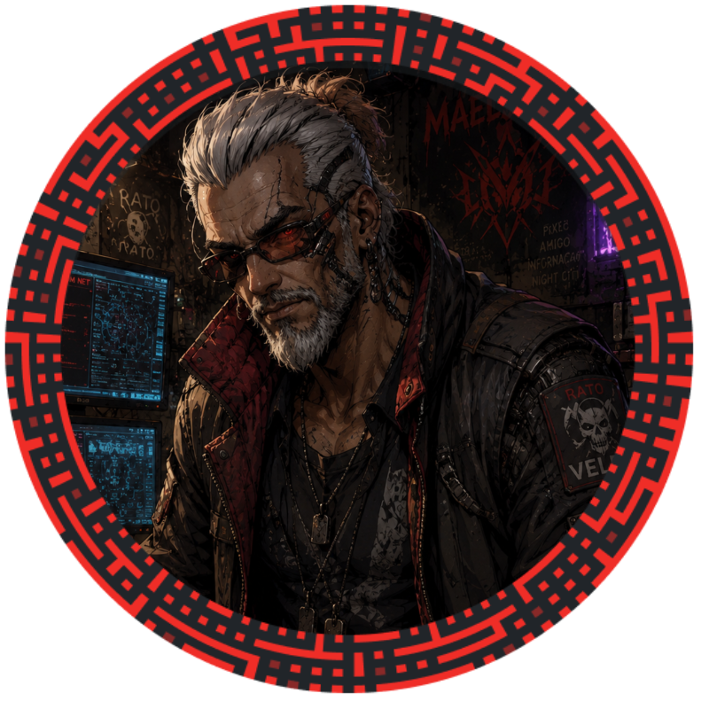
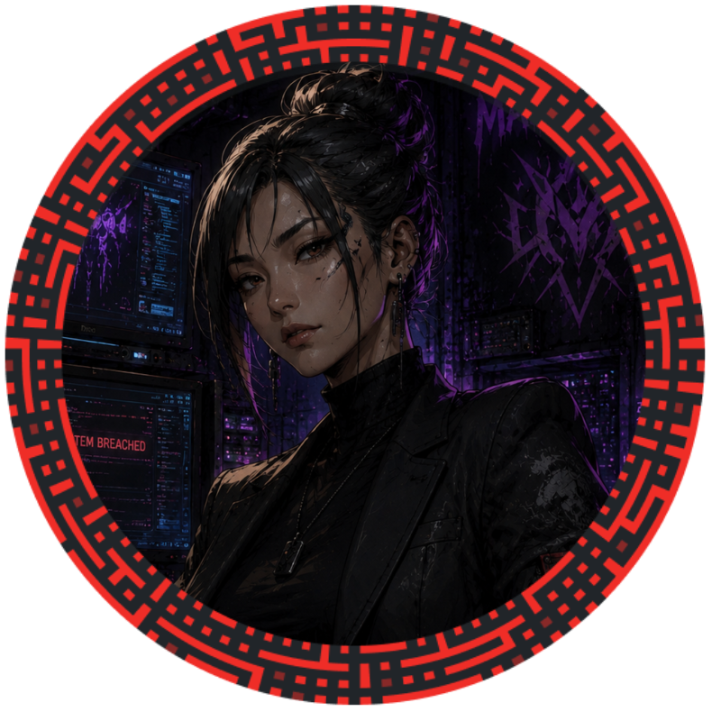
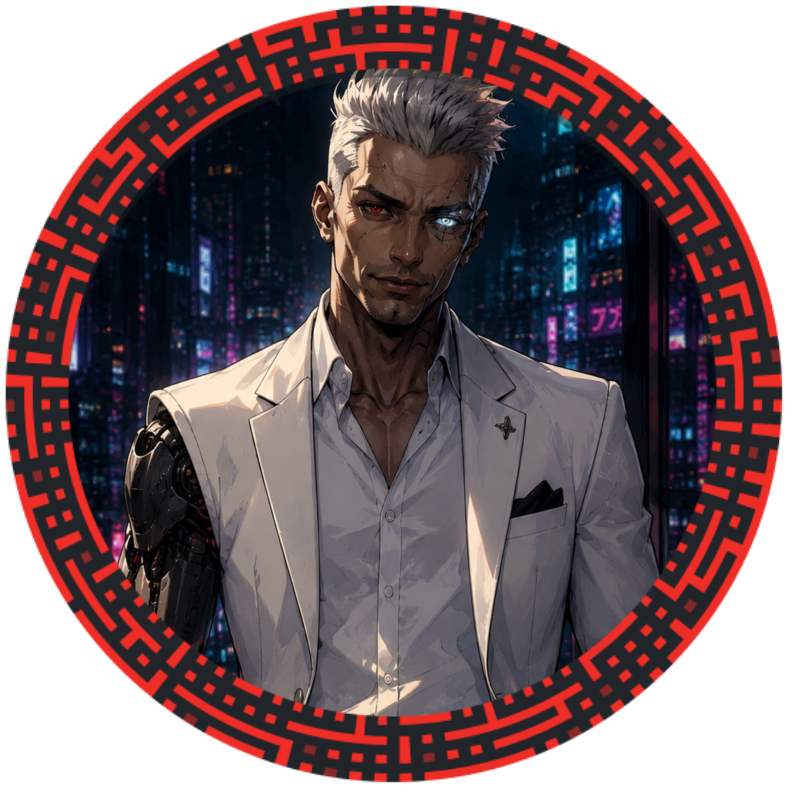

Contatos

Rato Velez
Rato Velez é um Tech de 52 anos que mora em um prédio decadente em Old Japantown na região central de Night City. Ele tem um pequeno depósito em Little China que usa para trabalhar principalmente consertando equipamentos com defeito e desmontando implantes cibernéticos para negociar nos Mercados Noturnos de Night City.
Qual a relação dele com os personagens?
Neutra. Rato ainda não conhece totalmente o grupo de mercenários pois acabaram de se conhecer. Atualmente eles estão trabalhando juntos por dinheiro.
Quais são as outras relações que ele tem?
Ele costuma fazer alguns serviços simples principalmente como guia para Fixers e mercenários no distrito de Old Japantown para fazer um pouco de dinheiro.

Lena Hikari
Lena Hikari é uma Midia de 33 anos descendente de japonenes e vive atualmente em um prédio decadente em Old Japantown. Cerca de 8 anos atrás Lena foi uma Midia com um pouco de fama que chegou a trabalhar na N54 News. Hoje em dia ela faz trabalhos como freelancer descobrindo os "podres e segredos obscuros" de pessoas famosas ou ligadas a corporações e expõe tudo em seu site, infelizmente por conta disso, Lena faz diversos inimigos por conta de suas publicações.
Qual a relação dela com os personagens?
Amigável. Lena foi salva de uma "queda para morte" após ser descoberta por uma corporação e é extremamente grata ao grupo de mercenários por ter salvado sua vida.
Quais são as outras relações que ela tem?
Ela ainda mantem contato com alguns funcionários da N54 News que ajudam ela a conseguir informações importantes para continuar fazendo seus serviços como freelancer.

Mako Reyes
Mako Reyes é um Fixer de 38 anos com traços de europeu. Pouco se sabe sobre ele, a maioria de suas informações são vagas ou foram deletadas dos Bancos de Dados. No entanto, o que se sabe é que ele a poucos anos começou a trabalhar como Fixer atuando principalmente no Bar Atlantis. Ele tem um porte físico elegante e alguns implantes com um valor bastante elevado.
Qual a relação dela com os personagens?
Neutra. Mako é apenas um contratante que precisa das habilidades de um grupo de mercenários profissionais e não idiotas para cumprir a missão que ele repassou.
Quais são as outras relações que ele tem?
Ninguém sabe o que Mako Reyes fazia e quais negócios ele tinha antes de se tornar um Fixer, algumas pessoas dizem nas ruas que ele já foi algum engravatado trabalhando para uma corporação.